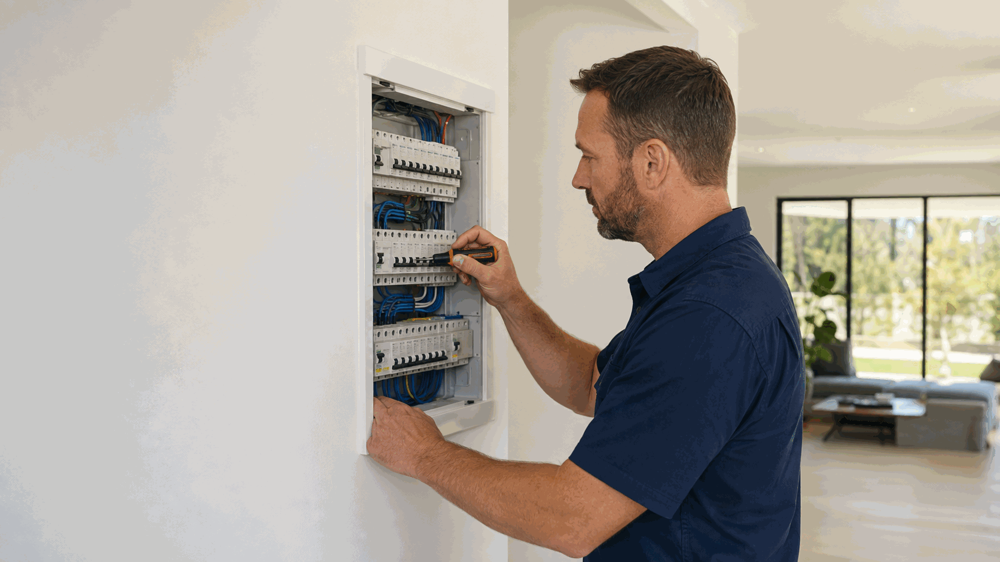

Power-fault diagnosis / priority attendance
AUD $220–$440
per attendance · incl. GST
Book electrical fault finding and power repairs in Perth for lost power, intermittent circuits and recurring electrical faults. Ellis Services Group provides licensed electrical assessment, explains the identified repair scope and confirms a written quote. Our local team investigates the fault rather than assuming the same replacement part will suit every power problem.
Call 0413 477 667 Book electrical fault findingTell us whether the problem affects one outlet, several rooms or the whole property. The extent of the loss helps establish the investigation needed, but it does not prove where the fault is. Our electrician assesses the relevant installation and reported symptoms; an issue outside the property installation may require a different responsible party.
A circuit that works at some times and fails at others needs the pattern of the interruption considered. Tell us what was in use, whether the issue recurs and any previous work. We use that information to plan the fault investigation, not to ask you to recreate an unsafe fault or open equipment.
A switch tripping can accompany a broader loss-of-power problem, but the protective device is not automatically the faulty part. We assess the installation and explain the identified repair. For enquiries centred on repeated RCD operation, see our safety-switch and RCD repair service.

Our electrician reviews the affected area, reported events and access to the installation, then carries out the relevant fault investigation. Finding the cause and repairing it are distinct tasks. We explain the findings before agreeing components, connection repairs or additional circuit work, rather than quoting an undefined replacement based only on the enquiry.
The written quote identifies the proposed repair and any further work needed to reach or correct the fault. A connection repair is a different scope from alterations to the existing wiring. If the investigation identifies an issue outside the original request, we explain it and confirm the scope before extra work proceeds.
After the approved work, we carry out the relevant checks and explain the completed repair and any remaining issue. One fault-finding visit is not a blanket assessment of every electrical item in the property. For a specific fitting or outlet request, our power-point and lighting services provide a more focused service pathway.
Our Perth plumbing and electrical work is carried out by appropriately licensed trades. Licence details are available on request.
Safety: Do not remove switchboard covers, handle wiring or repeatedly recreate a fault. Keep clear of damaged, wet or overheating equipment. For immediate danger, Call 000.
Ellis Price Guide
A practical guide for standard fault diagnosis or priority attendance at a Perth property.
AUD $220–$440
per attendance · incl. GST
Guide conditions: These AUD ranges are for standard-hours, standard-scope work and are incl. GST. Access, materials, extra pipe, cable or circuit work, compliance work, emergency or after-hours work and unforeseen repairs are confirmed in a written quote before work proceeds.
The area losing power, recurring symptoms, accessible equipment and the findings of the on-site investigation determine the work. Finding the fault and completing a repair can involve different tasks. We explain the identified scope, replacement components and any additional circuit work before the quote is agreed.
The final written quote sets out the work included, materials and any agreed additional tasks. We explain changes to the scope before extra work proceeds. Request a electrical fault finding quote.
No. Describe the observable change and property context. We inspect the affected area on site to establish the cause and confirm the repair scope. If more access is needed, we agree it with you first.
Photos are optional: email safely taken photos to maxinemaintenance.au@outlook.com. You can contact us without photos. Do not approach a hazard, remove covers or dismantle equipment to take a photo.
List the affected rooms or circuits, what happened first, what was in use and any warning signs you can observe safely.
No. Avoid repeatedly resetting an electrical device that trips again.
Move to safety and call 000 if there is immediate danger.
Investigation and repair can involve separate tasks. We explain the assessment scope and the proposed corrective work, including components or circuit changes, before the written quote is agreed.
Include the suburb, affected rooms or circuits, when the interruption began and any recurrence. For a managed property, add the access contact, work-order number and approval instructions. Our local team covers all six Perth service regions from our office at 140 St Georges Terrace, Perth WA 6000.
Call to discuss the work or send the property details through our enquiry form. You do not need to diagnose the fault or complete a technical inspection before contacting us.
Call 0413 477 667 Request a visit & written quote